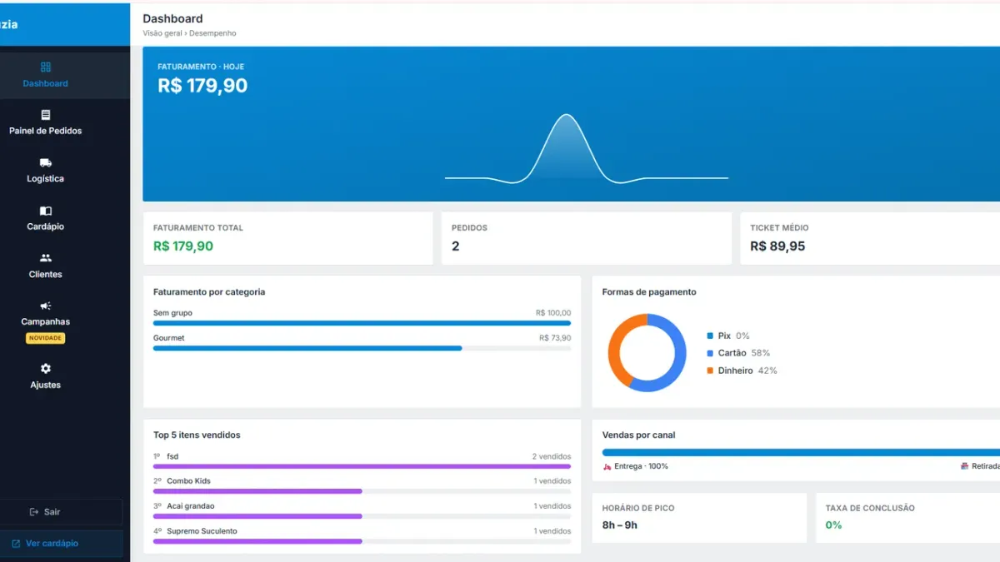

Status do pedido no WhatsApp: acabe com o "cadê meu pedido?"

"Moço, cadê meu pedido?" Essa mensagem chega na pior hora, tira alguém da produção e quase sempre tem a mesma resposta: "já está saindo". Quase ninguém cobra por maldade. O cliente pergunta porque não sabe o que está acontecendo. Quando o status do pedido chega no WhatsApp sozinho, boa parte dessa cobrança deixa de existir.
Quais avisos o cliente recebe
- Pedido recebido: assim que entra na loja
- Pedido aceito: com resumo de itens, total e pagamento
- Pronto: para retirada, ou pronto e aguardando a saída
- Saiu para entrega: quando o entregador sai
- Entregue: fecha o ciclo
- Pedido agendado e pedido alterado: para os casos fora do fluxo normal
Sem trabalho a mais para a equipe
Ninguém digita nada. Quando o pedido muda de coluna no painel, o aviso sai. Quem já move o pedido para acompanhar a produção passa a informar o cliente sem nenhum clique extra.
Do seu jeito
Dá para trocar o texto das etapas, desligar uma etapa ou desligar os avisos para um tipo de pedido (entrega, retirada ou consumo no local). Quem quer poucos avisos deixa só o essencial; quem tem marca informal escreve com a própria voz.
Por que isso vende mais
- Menos interrupção no pico: quem responde cobrança não está produzindo.
- Espera mais tranquila: saber que o pedido saiu muda a percepção do tempo.
- Confiança na primeira compra: principalmente de quem veio do aplicativo.
- Marca presente: cada aviso leva o nome da loja para o WhatsApp do cliente.
Se o problema é o atraso, não o aviso
Aviso informa, mas não acelera. Se o pedido atrasa de verdade, olhe a produção com a tela de cozinha, a rota de motoboy e o guia de organização da cozinha.
Quanto custa
O robô de atendimento no WhatsApp faz parte do plano Completo, R$149/mês, sem comissão por pedido e sem fidelidade.
Buscas relacionadas
O que donos de restaurante e delivery pesquisam antes de contratar — cada busca leva para a página que responde a ela:
Perguntas frequentes
Quais status o cliente recebe no WhatsApp?
Recebido, aceito com resumo, pronto, saiu para entrega e entregue, além de avisos de pedido agendado e pedido alterado.
Preciso enviar as mensagens manualmente?
Não. Elas saem automaticamente quando o pedido muda de etapa no painel.
Posso mudar o texto das mensagens?
Sim, nas etapas personalizáveis. Também dá para desligar uma etapa ou um tipo de pedido.
Funciona para retirada no balcão?
Sim. Há avisos separados para entrega, retirada e consumo no local.
O cliente precisa instalar algo?
Não. Ele recebe os avisos no WhatsApp que já usa.
Fale com um especialista do Menuzia
Sem comissão por pedido e sem fidelidade. Planos a partir de R$97/mês, com configuração feita pela nossa equipe.
Quero conhecer o Menuzia →